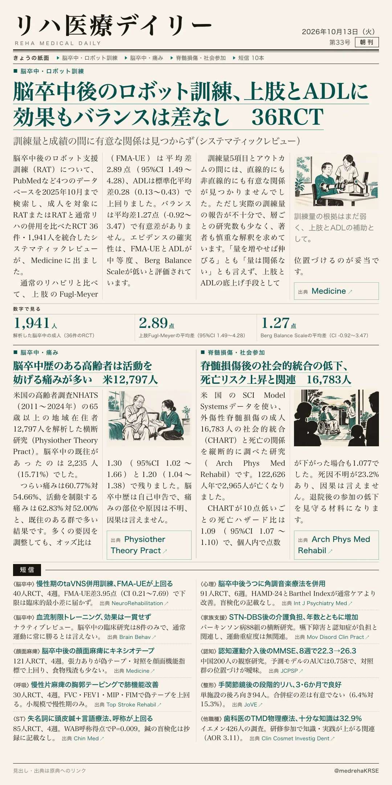
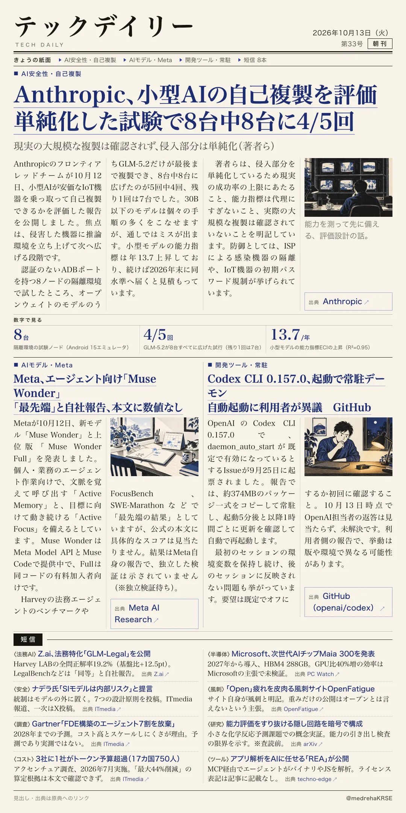

リハ医療デイリー
脳卒中後のロボット訓練、上肢とADLに効果もバランスは差なし 36RCT
訓練量と成績の間に有意な関係は見つからず（システマティックレビュー）
脳卒中後のロボット支援訓練が、どれだけの量でどこに効くのかを統合した解析です。

テックデイリー
Anthropic、小型AIの自己複製を評価 単純化した試験で8台中8台に4/5回
現実の大規模な複製は確認されず、侵入部分は単純化（著者ら）
AIが安価なIoT機器に自分を広げられるかを、隔離環境で測った研究報告です。
